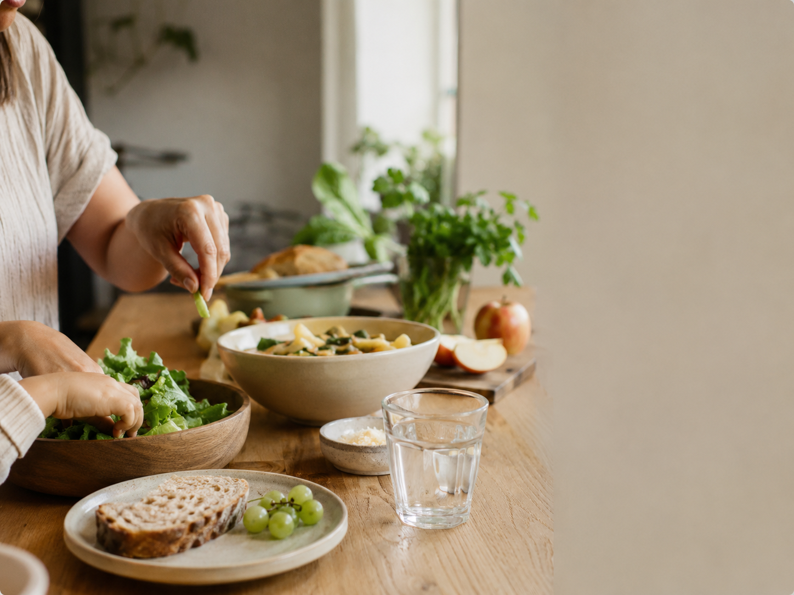

Stable Care.
Stronger Nurses.
Healthier Communities.
Single mom nurses show up every day for their patients, families, and communities. Triage4US helps provide reliable childcare, family support, and wellness resources so nurses can continue caring for others with greater stability and peace of mind.
Powered by Triage360 in partnership with Care.com
Behind every shift is a family depending on them.
Nurses work long hours, overnight schedules, weekends, and holidays, often while raising children on their own. Triage4US was created to help provide stability where it matters most.
-
Women in nursing
78%
of nurses are women
Nursing is one of the most female-dominated professions in the country.
-
Daily reality
12+ Hours
is a common shift length
-
Sole caregiver
1 in 4
nurses are raising children alone
They care for others every day. We help care for the support system behind them.
More than childcare. Real support for families.
Triage4US helps single mom nurses access dependable childcare, educational support, wellness programs, and family resources that create more stability at home and more confidence at work.
-
On-Demand Childcare
Reliable care for last-minute shifts, overnight schedules, and demanding healthcare environments.
-
Homework & Tutoring Support
Helping children stay supported, encouraged, and confident in school.
-

Meal & Nutrition Assistance
Healthy meals and practical support that help families stay balanced during busy weeks.
-
Wellness & Mentorship
Resources and guidance that support emotional wellness for both moms and children.
-
Sports & Activity Support
Helping kids stay active, connected, and engaged outside the classroom.
-
Future Readiness Programs
Encouraging long-term growth through mentorship, guidance, and opportunity.
Supporting nurses strengthens entire communities.
When nurses have reliable childcare and family support systems, they are able to focus more fully on the people who depend on them both at home and in healthcare settings.
Triage4US exists to help create healthier routines, stronger family foundations, and sustainable support systems for the healthcare professionals who care for our communities every day.
“When single mom nurses have support, everyone wins.”
Every contribution helps create stability.
Every donation directly supports programs designed to help single mom nurses and their families feel supported, prepared, and cared for.
-
$25
Helps provide after-school enrichment support
-
$75
Supports emergency childcare coverage
-
$150
Helps fund tutoring and wellness resources
-
$300
Supports a family assistance package
Together, we can cover what matters.
By supporting Triage4US, you are helping create more stability for the families behind healthcare and stronger communities for everyone.
Frequently asked questions
-
Triage4US is a nonprofit initiative focused on helping single mom nurses access childcare, family support, wellness resources, and educational assistance.
-
Triage4US supports single mother nurses and their families, especially those balancing demanding healthcare schedules with parenting responsibilities.
-
Donations help fund childcare assistance, tutoring, wellness resources, meal support, and family stability programs for nurses and their children.
-
Yes. Businesses, healthcare organizations, and community partners can help expand support programs for nurse families.